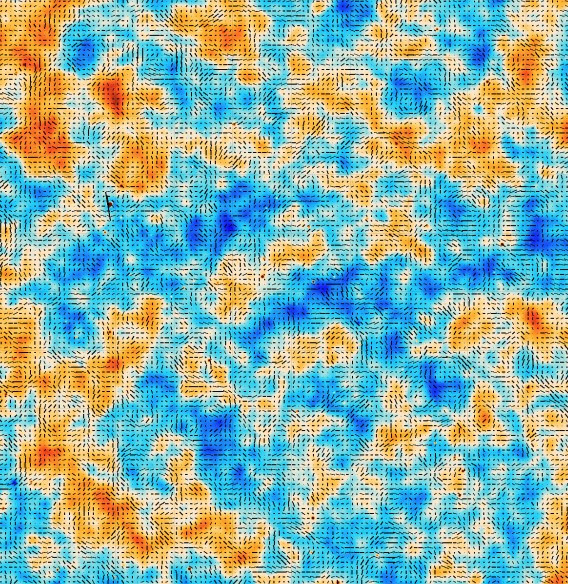
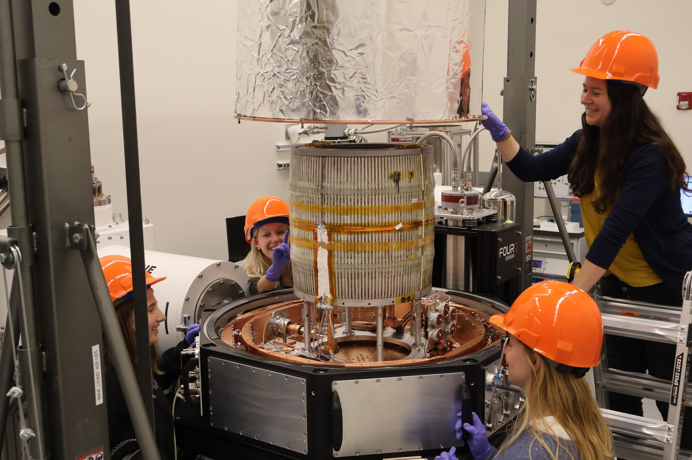
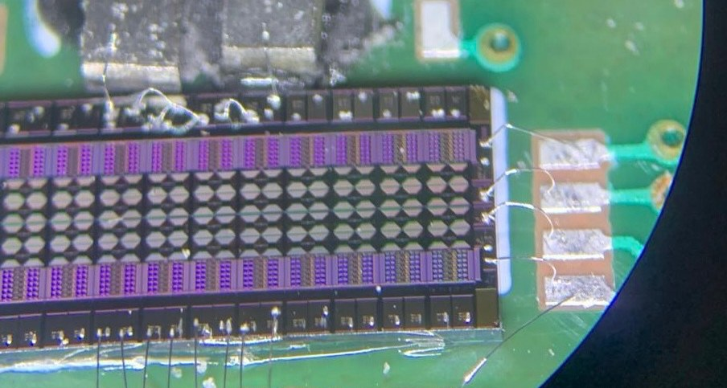
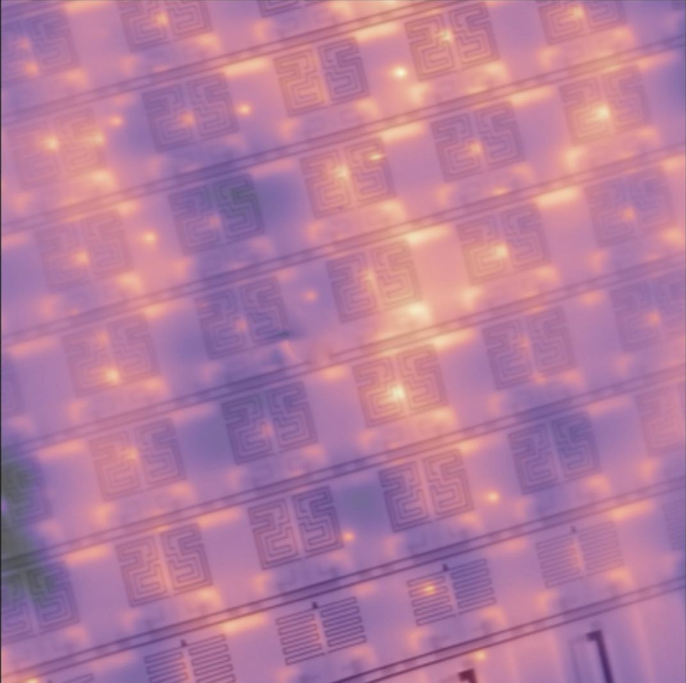

Research
We develop quantum sensors and superconducting devices to search for dark matter and probe physics beyond the Standard Model.

Dark Matter Radio
Tunable resonant circuits that scan for axion and hidden-photon dark matter, like an AM radio tuning between stations.

Radio-frequency Quantum Upconverters
Josephson-junction quantum sensors that bring beyond-SQL measurement to the VHF band.

Quantum Backaction and Correlated Noise
Correlated noise in DC SQUID readout of MHz resonators, and using SQUID backaction for amplification and squeezing.

Scanning SQUID Microscopy
Micron-scale magnetic imaging of superconducting devices and quantum coherent systems.